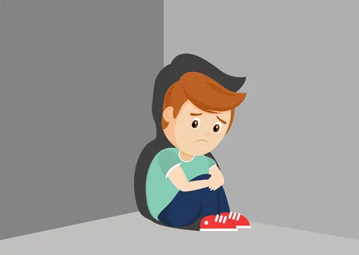

Suicide is a leading cause of death in the United States. In fact, it was the 2nd leading cause of death
for people ages 10-24. It accounted for the loss of more than 45,979 American lives in 2020, nearly
double the number of lives lost to homicide. (Mental Health Myths and Facts | MentalHealth.gov, n.d.)
Myth 2: Children don't experience mental health problems.

Half of all mental health disorders show first signs before a person turns 14 years old, and
three-quarters of mental health disorders begin before age 24. (Mental Health Myths and Facts |
MentalHealth.gov, n.d.)
Myth 3: There is no hope for people with mental health problems.
Studies show that people with mental health problems get better and many recover completely. There
are more treatments, services, and community support systems than ever before, and they work.
(Mental Health Myths and Facts | MentalHealth.gov, n.d.)
Here are some common mental health diseases:
Anxiety Disorders
Anxiety disorders are characterised by excessive fear and worry and related behavioural disturbances. There are several different kinds of anxiety disorders, such as: generalised anxiety disorder (characterised by excessive worry), panic disorder (characterised by panic attacks), and others.
Depression
During a depressive episode, the person experiences depressed mood (feeling sad, irritable, empty) or a loss of pleasure or interest in activities. Several other symptoms are also present, which may include poor concentration, feelings of excessive guilt or low self-worth, hopelessness about the future, thoughts about dying or suicide and others.
Post-Traumatic Stress Disorder (PTSD)
PTSD may develop following exposure to an extremely threatening or horrific event or series of events. It is characterised by all of the following: 1) re-experiencing the traumatic event or events in the present (intrusive memories, flashbacks, or nightmares); 2) avoidance of thoughts and memories of the event(s), or avoidance of activities, situations, or people reminiscent of the event(s); and 3) persistent perceptions of heightened current threat.
(Mental Disorders, 2022)
Here is a video explaining anxiety by American Psychiatric Association (APA):
(American Psychiatric Association, 2022)
The majority of the public are ignorant to the psychological part of their health, as known as,
mental health. This is because they believe in myths such as those stated above. These unproven
myths led to mental health disorders getting more common among individuals.
Thus, this website wishes to raise awareness on the problem of mental health
disorders.
You can be the difference maker. Contact us today!


 Studies show that people with mental health problems get better and many recover completely. There
are more treatments, services, and community support systems than ever before, and they work.
(Mental Health Myths and Facts | MentalHealth.gov, n.d.)
Studies show that people with mental health problems get better and many recover completely. There
are more treatments, services, and community support systems than ever before, and they work.
(Mental Health Myths and Facts | MentalHealth.gov, n.d.)